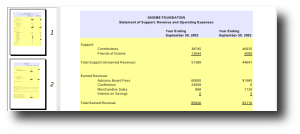
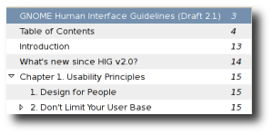

Simply a document viewer
![[Evince Screenshot]](images/screenshot.png)
What is Evince?
Evince is a document viewer for multiple document formats like pdf, postscript, and many others. The goal of evince is to replace the multiple document viewers that exist on the GNOME Desktop, like ggv, gpdf, and xpdf with a single simple application.
More screenshots are available in the screenshots section.
Supported Document Formats
So far Evince supports the file following formats.
- Postscript
We are looking into or planning on adding support for the following:
- Multi-Page TIFF (bug 167009)
- DJVU (bug 166720)
- DVI (included, but needs work)
- Images (included, but needs work)
Features
Search
![[Evince Searching]](images/searching.png)
Integrated search displaying the number of results found and highlights the results on the page.
Page Thumbnails
Thumbnails of pages show quick reference for where you'd like to go in a document. Evince's thumbnails are available in the left sidebar of the viewer.
Page Indexing
For documents that support indexes Evince gives the option to show the document index for quick jumping from one section to another.
Download
You should get Evince from your distribution, but if you can't find it there or are looking for the latest you might be able to get it here.
RPMs
- Fedora now has evince in the development repository
- Mandrake Cooker RPMs
DEBs
- Sebastien Bacher has uploaded packages to Ubuntu Hoary (universe)
Ebuilds
- Gentoo has an ebuild here
Source
- FTP Server
- CVS Repository
- Use jhbuild by running jhbuild build evince
Contribute
There are several ways to contribute to the Evince project.
Testing, go here if you find a problem with any pdf or postscript files to report it.
Developing, get the code and try to fix errors and send patches to the maintainers.
Helping out on the mailing list and IRC for people having problems, letting them know where to go and what to do.
Contact
You can contact developers sending a mail to the Evince mailing list. You do not need to be subscribed.
We are also often available to chat on IRC.
Server: irc.gnome.org
Channel: #evince